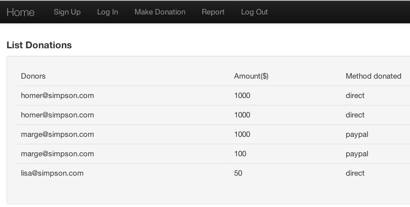

Step-by-step guide to building Donation application.
This, the final iteration, is built on v3 and adds a reporting facility.
Features of iteration v4
Welcome
Sign on
Sign in
Donation
Sign out
Report
Report
The additional feature in this iteration is a report generator.
We require something similar that that shown in Figure 1.

Add a Report controller:
package controllers;
import java.util.List;
import models.Donation;
import play.mvc.*;
public class Report extends Controller
{
public static void index()
{
List<Donation> donations = Donation.findAll();
render(donations);
}
}Create a corresponding views/Report folder.
Filename: views/Report/index.html
#{extends 'main.html' /}
#{set title:'Report' /}
<nav class="ui menu">
<a class="ui item" href="/">Home</a>
<a class="ui item" href="/signup">Sign Up</a>
<a class="ui item" href="/login">Log In</a>
<a class="ui item" href="/donation">Make Donation</a>
<a class="ui active item" href="/report">Report</a>
<a class="ui item" href="/logout">Log Out</a>
</nav>
<section class="ui segment">
<div class="ui raised segment">
<h4>List Donations</h4>
<table class="ui table segment">
<thead>
<tr>
<th>Donors</th>
<th>Amount($)</th>
<th>Method donated</th>
</tr>
</thead>
<tbody>
#{list items:donations, as:'donation'}
<tr>
<td>${donation.from.firstName} ${donation.from.lastName}</td>
<td>${donation.received}</td>
<td>${donation.methodDonated}</td>
</tr>
#{/list}
</tbody>
</table>
</div>
</section>Add the following to the navigation bar in the DonationController.index.html to facilitate routing to the report template:
<a class="ui item" href="/report">Report</a>Lastly, in the routes file, define the association to route the report request to the controller:
#Report
GET /report Report.indexThis concludes iteration v4, the final iteration of Donation.
You may view a live version of this iteration hosted on Heroku here.
Commit this iteration to your donation repository, add a tag and push all to remote repo.
git add .
git commit -m 'iteration v4'
git tag -a v4 -m 'iteration v4'
git push && git push --tagsAn archived version of the git repository of the completed project is available here.